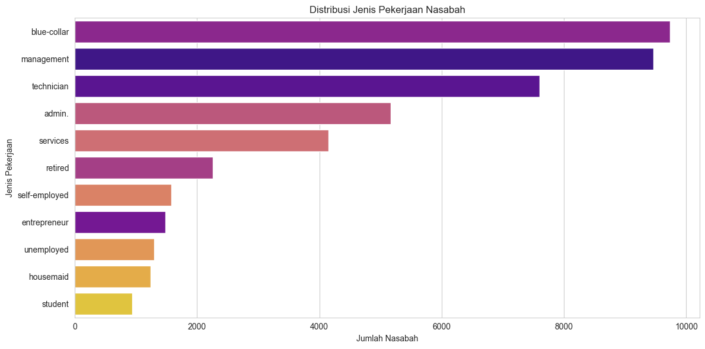
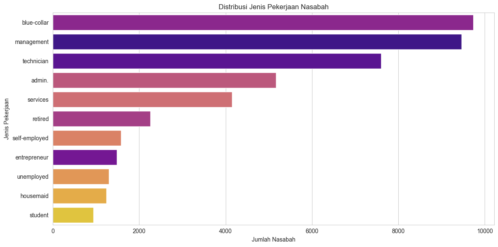

Ensemble Learning#
%pip install -q ucimlrepo scikit-learn imbalanced-learn
Note: you may need to restart the kernel to use updated packages.
[notice] A new release of pip is available: 25.2 -> 25.3
[notice] To update, run: python.exe -m pip install --upgrade pip
import pandas as pd
import numpy as np
import matplotlib.pyplot as plt
import seaborn as sns
from ucimlrepo import fetch_ucirepo
from sklearn.model_selection import train_test_split
from sklearn.preprocessing import StandardScaler, OneHotEncoder
from sklearn.compose import ColumnTransformer
from sklearn.pipeline import Pipeline
from sklearn.impute import SimpleImputer
from imblearn.pipeline import Pipeline as ImbPipeline
from imblearn.over_sampling import SMOTE
from sklearn.ensemble import BaggingClassifier
from sklearn.svm import SVC
from sklearn.naive_bayes import GaussianNB
from sklearn.metrics import accuracy_score, classification_report, confusion_matrix, ConfusionMatrixDisplay
---------------------------------------------------------------------------
ImportError Traceback (most recent call last)
Cell In[2], line 11
9 from sklearn.pipeline import Pipeline
10 from sklearn.impute import SimpleImputer
---> 11 from imblearn.pipeline import Pipeline as ImbPipeline
12 from imblearn.over_sampling import SMOTE
13 from sklearn.ensemble import BaggingClassifier
File c:\KULIAH\Semester 5\PSD\psd-repo\.venv\Lib\site-packages\imblearn\__init__.py:54
50 sys.stderr.write("Partial import of imblearn during the build process.\n")
51 # We are not importing the rest of scikit-learn during the build
52 # process, as it may not be compiled yet
53 else:
---> 54 from . import (
55 combine,
56 ensemble,
57 exceptions,
58 metrics,
59 model_selection,
60 over_sampling,
61 pipeline,
62 tensorflow,
63 under_sampling,
64 utils,
65 )
66 from ._version import __version__
67 from .base import FunctionSampler
File c:\KULIAH\Semester 5\PSD\psd-repo\.venv\Lib\site-packages\imblearn\combine\__init__.py:5
1 """The :mod:`imblearn.combine` provides methods which combine
2 over-sampling and under-sampling.
3 """
----> 5 from ._smote_enn import SMOTEENN
6 from ._smote_tomek import SMOTETomek
8 __all__ = ["SMOTEENN", "SMOTETomek"]
File c:\KULIAH\Semester 5\PSD\psd-repo\.venv\Lib\site-packages\imblearn\combine\_smote_enn.py:12
9 from sklearn.base import clone
10 from sklearn.utils import check_X_y
---> 12 from ..base import BaseSampler
13 from ..over_sampling import SMOTE
14 from ..over_sampling.base import BaseOverSampler
File c:\KULIAH\Semester 5\PSD\psd-repo\.venv\Lib\site-packages\imblearn\base.py:15
12 from sklearn.utils._metadata_requests import METHODS
13 from sklearn.utils.multiclass import check_classification_targets
---> 15 from .utils import check_sampling_strategy, check_target_type
16 from .utils._sklearn_compat import _fit_context, get_tags, validate_data
17 from .utils._validation import ArraysTransformer
File c:\KULIAH\Semester 5\PSD\psd-repo\.venv\Lib\site-packages\imblearn\utils\__init__.py:6
1 """
2 The :mod:`imblearn.utils` module includes various utilities.
3 """
5 from ._docstring import Substitution
----> 6 from ._validation import (
7 check_neighbors_object,
8 check_sampling_strategy,
9 check_target_type,
10 )
12 __all__ = [
13 "check_neighbors_object",
14 "check_sampling_strategy",
15 "check_target_type",
16 "Substitution",
17 ]
File c:\KULIAH\Semester 5\PSD\psd-repo\.venv\Lib\site-packages\imblearn\utils\_validation.py:20
17 from sklearn.utils.multiclass import type_of_target
18 from sklearn.utils.validation import _num_samples
---> 20 from ..utils._sklearn_compat import _is_pandas_df, check_array
22 SAMPLING_KIND = (
23 "over-sampling",
24 "under-sampling",
(...) 27 "bypass",
28 )
29 TARGET_KIND = ("binary", "multiclass", "multilabel-indicator")
File c:\KULIAH\Semester 5\PSD\psd-repo\.venv\Lib\site-packages\imblearn\utils\_sklearn_compat.py:256
251 else:
252 from sklearn.utils.metadata_routing import (
253 _raise_for_params, # noqa: F401
254 process_routing, # noqa: F401
255 )
--> 256 from sklearn.utils.validation import (
257 _is_fitted, # noqa: F401
258 _is_pandas_df, # noqa: F401
259 )
262 ########################################################################################
263 # Upgrading for scikit-learn 1.5
264 ########################################################################################
267 if sklearn_version < parse_version("1.5"):
268 # chunking
269 # extmath
270 # fixes
ImportError: cannot import name '_is_pandas_df' from 'sklearn.utils.validation' (c:\KULIAH\Semester 5\PSD\psd-repo\.venv\Lib\site-packages\sklearn\utils\validation.py)
Data Info#
print("### 1. Tahap Pemahaman Data ###")
# Mengambil dataset
bank_marketing = fetch_ucirepo(id=222)
X_features = bank_marketing.data.features
y_target = bank_marketing.data.targets
df = pd.concat([X_features, y_target], axis=1)
# Menampilkan informasi dasar
print("\nInformasi Dataset:")
df.info()
### 1. Tahap Pemahaman Data ###
---------------------------------------------------------------------------
ValueError Traceback (most recent call last)
File c:\Users\zulfr\AppData\Local\Programs\Python\Python311\Lib\http\client.py:573, in HTTPResponse._get_chunk_left(self)
572 try:
--> 573 chunk_left = self._read_next_chunk_size()
574 except ValueError:
File c:\Users\zulfr\AppData\Local\Programs\Python\Python311\Lib\http\client.py:540, in HTTPResponse._read_next_chunk_size(self)
539 try:
--> 540 return int(line, 16)
541 except ValueError:
542 # close the connection as protocol synchronisation is
543 # probably lost
ValueError: invalid literal for int() with base 16: b''
During handling of the above exception, another exception occurred:
IncompleteRead Traceback (most recent call last)
File c:\Users\zulfr\AppData\Local\Programs\Python\Python311\Lib\http\client.py:590, in HTTPResponse._read_chunked(self, amt)
589 while True:
--> 590 chunk_left = self._get_chunk_left()
591 if chunk_left is None:
File c:\Users\zulfr\AppData\Local\Programs\Python\Python311\Lib\http\client.py:575, in HTTPResponse._get_chunk_left(self)
574 except ValueError:
--> 575 raise IncompleteRead(b'')
576 if chunk_left == 0:
577 # last chunk: 1*("0") [ chunk-extension ] CRLF
IncompleteRead: IncompleteRead(0 bytes read)
The above exception was the direct cause of the following exception:
IncompleteRead Traceback (most recent call last)
Cell In[3], line 4
1 print("### 1. Tahap Pemahaman Data ###")
3 # Mengambil dataset
----> 4 bank_marketing = fetch_ucirepo(id=222)
5 X_features = bank_marketing.data.features
6 y_target = bank_marketing.data.targets
File c:\Users\zulfr\AppData\Local\Programs\Python\Python311\Lib\site-packages\ucimlrepo\fetch.py:97, in fetch_ucirepo(name, id)
95 df = None
96 try:
---> 97 df = pd.read_csv(data_url)
98 except (urllib.error.URLError, urllib.error.HTTPError):
99 raise DatasetNotFoundError('Error reading data csv file for "{}" dataset (id={}).'.format(name, id))
File c:\Users\zulfr\AppData\Local\Programs\Python\Python311\Lib\site-packages\pandas\io\parsers\readers.py:1026, in read_csv(filepath_or_buffer, sep, delimiter, header, names, index_col, usecols, dtype, engine, converters, true_values, false_values, skipinitialspace, skiprows, skipfooter, nrows, na_values, keep_default_na, na_filter, verbose, skip_blank_lines, parse_dates, infer_datetime_format, keep_date_col, date_parser, date_format, dayfirst, cache_dates, iterator, chunksize, compression, thousands, decimal, lineterminator, quotechar, quoting, doublequote, escapechar, comment, encoding, encoding_errors, dialect, on_bad_lines, delim_whitespace, low_memory, memory_map, float_precision, storage_options, dtype_backend)
1013 kwds_defaults = _refine_defaults_read(
1014 dialect,
1015 delimiter,
(...)
1022 dtype_backend=dtype_backend,
1023 )
1024 kwds.update(kwds_defaults)
-> 1026 return _read(filepath_or_buffer, kwds)
File c:\Users\zulfr\AppData\Local\Programs\Python\Python311\Lib\site-packages\pandas\io\parsers\readers.py:620, in _read(filepath_or_buffer, kwds)
617 _validate_names(kwds.get("names", None))
619 # Create the parser.
--> 620 parser = TextFileReader(filepath_or_buffer, **kwds)
622 if chunksize or iterator:
623 return parser
File c:\Users\zulfr\AppData\Local\Programs\Python\Python311\Lib\site-packages\pandas\io\parsers\readers.py:1620, in TextFileReader.__init__(self, f, engine, **kwds)
1617 self.options["has_index_names"] = kwds["has_index_names"]
1619 self.handles: IOHandles | None = None
-> 1620 self._engine = self._make_engine(f, self.engine)
File c:\Users\zulfr\AppData\Local\Programs\Python\Python311\Lib\site-packages\pandas\io\parsers\readers.py:1880, in TextFileReader._make_engine(self, f, engine)
1878 if "b" not in mode:
1879 mode += "b"
-> 1880 self.handles = get_handle(
1881 f,
1882 mode,
1883 encoding=self.options.get("encoding", None),
1884 compression=self.options.get("compression", None),
1885 memory_map=self.options.get("memory_map", False),
1886 is_text=is_text,
1887 errors=self.options.get("encoding_errors", "strict"),
1888 storage_options=self.options.get("storage_options", None),
1889 )
1890 assert self.handles is not None
1891 f = self.handles.handle
File c:\Users\zulfr\AppData\Local\Programs\Python\Python311\Lib\site-packages\pandas\io\common.py:728, in get_handle(path_or_buf, mode, encoding, compression, memory_map, is_text, errors, storage_options)
725 codecs.lookup_error(errors)
727 # open URLs
--> 728 ioargs = _get_filepath_or_buffer(
729 path_or_buf,
730 encoding=encoding,
731 compression=compression,
732 mode=mode,
733 storage_options=storage_options,
734 )
736 handle = ioargs.filepath_or_buffer
737 handles: list[BaseBuffer]
File c:\Users\zulfr\AppData\Local\Programs\Python\Python311\Lib\site-packages\pandas\io\common.py:389, in _get_filepath_or_buffer(filepath_or_buffer, encoding, compression, mode, storage_options)
386 if content_encoding == "gzip":
387 # Override compression based on Content-Encoding header
388 compression = {"method": "gzip"}
--> 389 reader = BytesIO(req.read())
390 return IOArgs(
391 filepath_or_buffer=reader,
392 encoding=encoding,
(...)
395 mode=fsspec_mode,
396 )
398 if is_fsspec_url(filepath_or_buffer):
File c:\Users\zulfr\AppData\Local\Programs\Python\Python311\Lib\http\client.py:467, in HTTPResponse.read(self, amt)
464 return b""
466 if self.chunked:
--> 467 return self._read_chunked(amt)
469 if amt is not None:
470 if self.length is not None and amt > self.length:
471 # clip the read to the "end of response"
File c:\Users\zulfr\AppData\Local\Programs\Python\Python311\Lib\http\client.py:605, in HTTPResponse._read_chunked(self, amt)
603 return b''.join(value)
604 except IncompleteRead as exc:
--> 605 raise IncompleteRead(b''.join(value)) from exc
IncompleteRead: IncompleteRead(151477 bytes read)
Visualisasi Data#
Cell ini didedikasikan untuk visualisasi guna memahami karakteristik data.
Distribusi Target: Count Plot digunakan untuk melihat secara visual ketidakseimbangan antara kelas ‘yes’ dan ‘no’ pada variabel target.
Distribusi Fitur Numerik: Histogram dibuat untuk beberapa fitur numerik kunci seperti
age,balance, dandurationuntuk melihat sebaran datanya. Visualisasi ini juga membantu mengidentifikasi skewness atau adanya outlier secara visual.Distribusi Fitur Kategorikal: Count Plot untuk fitur
jobdigunakan untuk menunjukkan frekuensi setiap kategori pekerjaan. Plot ini membantu memahami komposisi demografis nasabah dalam dataset.
# Mengatur style plot
sns.set_style("whitegrid")
plt.figure(figsize=(18, 5))
# 1. Visualisasi Distribusi Target
plt.subplot(1, 3, 1)
sns.countplot(x='y', data=df, hue='y', palette='viridis')
plt.title('Distribusi Target (y)')
plt.xlabel('Berlangganan Deposito?')
plt.ylabel('Jumlah Nasabah')
# 2. Visualisasi Distribusi Umur (Age)
plt.subplot(1, 3, 2)
sns.histplot(df['age'], bins=30, kde=True, color='dodgerblue')
plt.title('Distribusi Umur Nasabah')
plt.xlabel('Umur')
plt.ylabel('Frekuensi')
# 3. Visualisasi Distribusi Saldo (Balance)
plt.subplot(1, 3, 3)
sns.histplot(df['balance'], bins=30, kde=True, color='orchid')
plt.title('Distribusi Saldo Nasabah')
plt.xlabel('Saldo')
plt.ylabel('Frekuensi')
plt.tight_layout()
plt.show()
# Visualisasi untuk fitur kategorikal (contoh: 'job')
plt.figure(figsize=(12, 6))
sns.countplot(y='job', data=df, hue='job', order=df['job'].value_counts().index, palette='plasma', legend=False)
plt.title('Distribusi Jenis Pekerjaan Nasabah')
plt.xlabel('Jumlah Nasabah')
plt.ylabel('Jenis Pekerjaan')
plt.tight_layout()
plt.show()
 

Data Preparation#
Proses pada cell ini sama persis dengan sebelumnya, yaitu menangani outliers, nilai yang hilang, dan membagi data menjadi set latih dan uji
# Pisahkan Fitur (X) dan Target (y)
X = df.drop('y', axis=1)
y = df['y']
# Tangani Outliers pada fitur numerik
numeric_features = X.select_dtypes(include=np.number).columns
for col in numeric_features:
Q1 = X[col].quantile(0.25)
Q3 = X[col].quantile(0.75)
IQR = Q3 - Q1
lower_bound = Q1 - 1.5 * IQR
upper_bound = Q3 + 1.5 * IQR
X[col] = np.clip(X[col], lower_bound, upper_bound)
print("Penanganan outliers selesai.")
# Identifikasi ulang fitur
categorical_features = X.select_dtypes(include=['object']).columns
# Buat pipeline preprocessing
numeric_transformer = Pipeline(steps=[('imputer', SimpleImputer(
strategy='median')), ('scaler', StandardScaler())])
categorical_transformer = Pipeline(steps=[('imputer', SimpleImputer(
strategy='most_frequent')), ('onehot', OneHotEncoder(handle_unknown='ignore'))])
preprocessor = ColumnTransformer(transformers=[(
'num', numeric_transformer, numeric_features), ('cat', categorical_transformer, categorical_features)])
# Bagi data
X_train, X_test, y_train, y_test = train_test_split(
X, y, test_size=0.2, random_state=42, stratify=y)
print(
f"\nData dibagi menjadi {X_train.shape[0]} baris data latih dan {X_test.shape[0]} baris data uji.")
Penanganan outliers selesai.
Data dibagi menjadi 36168 baris data latih dan 9043 baris data uji.
Modeling with Data Balancing#
Proses pemodelan menggunakan imblearn.pipeline untuk menyatukan preprocessing, SMOTE, dan classifier juga tidak berubah.
# Pipeline untuk Bagging SVM dengan SMOTE
svm_pipeline = ImbPipeline(steps=[('preprocessor', preprocessor), ('sampler', SMOTE(
random_state=42)), ('classifier', BaggingClassifier(estimator=SVC(), n_estimators=10, random_state=42))])
# Pipeline untuk Bagging Naive Bayes dengan SMOTE
nb_pipeline = ImbPipeline(steps=[('preprocessor', preprocessor), ('sampler', SMOTE(random_state=42)), (
'classifier', BaggingClassifier(estimator=GaussianNB(), n_estimators=10, random_state=42))])
# Melatih model
print("Melatih model Bagging SVM dengan SMOTE...")
svm_pipeline.fit(X_train, y_train)
print("Melatih model Bagging Naive Bayes dengan SMOTE...")
nb_pipeline.fit(X_train, y_train)
print("\nPelatihan model selesai.")
Melatih model Bagging SVM dengan SMOTE...
Melatih model Bagging Naive Bayes dengan SMOTE...
Pelatihan model selesai.
Hasil Evaluasi#
Cell ini berisi evaluasi, yaitu menghitung akurasi dan mencetak classification report seperti sebelumnya
# Prediksi pada data uji
svm_preds = svm_pipeline.predict(X_test)
nb_preds = nb_pipeline.predict(X_test)
# Hitung akurasi
svm_accuracy = accuracy_score(y_test, svm_preds)
nb_accuracy = accuracy_score(y_test, nb_preds)
print("\n--- Hasil Perbandingan Akurasi ---")
print(f"Akurasi Bagging dengan SVM: {svm_accuracy:.4f}")
print(f"Akurasi Bagging dengan Naive Bayes: {nb_accuracy:.4f}")
print("\n--- Laporan Klasifikasi untuk Bagging SVM ---")
print(classification_report(y_test, svm_preds))
print("\n--- Laporan Klasifikasi untuk Bagging Naive Bayes ---")
print(classification_report(y_test, nb_preds))
--- Hasil Perbandingan Akurasi ---
Akurasi Bagging dengan SVM: 0.8643
Akurasi Bagging dengan Naive Bayes: 0.8296
--- Laporan Klasifikasi untuk Bagging SVM ---
precision recall f1-score support
no 0.97 0.88 0.92 7985
yes 0.45 0.78 0.57 1058
accuracy 0.86 9043
macro avg 0.71 0.83 0.75 9043
weighted avg 0.91 0.86 0.88 9043
--- Laporan Klasifikasi untuk Bagging Naive Bayes ---
precision recall f1-score support
no 0.94 0.86 0.90 7985
yes 0.36 0.59 0.45 1058
accuracy 0.83 9043
macro avg 0.65 0.72 0.67 9043
weighted avg 0.87 0.83 0.85 9043
Visualiasi Hasil Evaluasi#
Cell baru ini menyajikan hasil evaluasi secara visual.
Perbandingan Akurasi
Sebuah bar plot sederhana dibuat untuk membandingkan skor akurasi akhir dari kedua model. Visualisasi ini memberikan cara yang cepat dan jelas untuk melihat model mana yang memiliki performa lebih unggul.
Confusion Matrix
Confusion Matrix divisualisasikan untuk model terbaik. Alat ini sangat berguna untuk menganalisis performa model secara lebih rinci, dengan menunjukkan jumlah prediksi yang benar (True Positive, True Negative) dan yang salah (False Positive, False Negative) untuk setiap kelas.
# 1. Visualisasi Perbandingan Akurasi
model_scores = {'Bagging SVM': svm_accuracy,
'Bagging Naive Bayes': nb_accuracy}
model_names = list(model_scores.keys())
accuracy_values = list(model_scores.values())
plt.figure(figsize=(12, 6))
plt.subplot(1, 2, 1)
bars = plt.bar(model_names, accuracy_values, color=['skyblue', 'lightgreen'])
plt.ylabel('Akurasi')
plt.title('Perbandingan Akurasi Model')
plt.ylim(0, 1)
for bar in bars:
yval = bar.get_height()
plt.text(bar.get_x() + bar.get_width()/2.0, yval,
f'{yval:.4f}', va='bottom', ha='center') # va: vertical alignment
# 2. Visualisasi Confusion Matrix untuk model terbaik (SVM)
plt.subplot(1, 2, 2)
cm = confusion_matrix(y_test, svm_preds, labels=svm_pipeline.classes_)
plt.subplot(1, 2, 2)
ax = plt.gca() # get current axis
cm = confusion_matrix(y_test, svm_preds, labels=svm_pipeline.classes_)
disp = ConfusionMatrixDisplay(
confusion_matrix=cm, display_labels=svm_pipeline.classes_)
disp.plot(cmap='Blues', ax=ax, colorbar=False) # gambar di axis aktif
ax.grid(False)
plt.title('Confusion Matrix - Bagging SVM')
plt.title('Confusion Matrix - Bagging SVM')
plt.tight_layout()
plt.show()
# Kesimpulan
print("\n--- Kesimpulan ---")
if svm_accuracy > nb_accuracy:
print("Berdasarkan akurasi dan visualisasi, estimator terbaik adalah Bagging dengan SVM.")
else:
print("Berdasarkan akurasi dan visualisasi, estimator terbaik adalah Bagging dengan Naive Bayes.")

--- Kesimpulan ---
Berdasarkan akurasi dan visualisasi, estimator terbaik adalah Bagging dengan SVM.